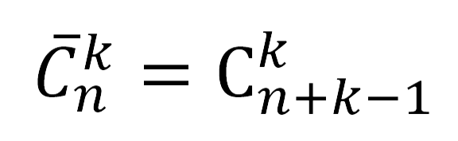
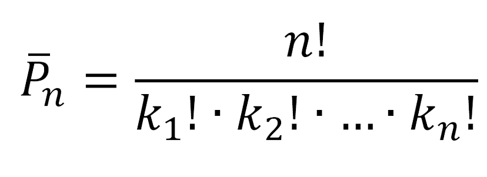

-
Сколькими способами из множества A = {a1, a2,…,an} можно выбрать ничего?
Для этого по формуле размещений посчитаем A(n,0) = n!/(n-0)!=n!/n!=1
Пожалуй, это логично: есть единственный способ не выбрать ни одного объекта (выбрать пустое множество) из n имеющихся — ничего не выбирать.
Ответ: 1 способ.
-
Сколькими способами можно 5 шариков разбросать по 8 лункам, если каждая лунка может вместить все 5 шариков?
Как видно из условия шариков меньше, чем лунок и => шарики надо будет возвращать на исходные позиции. Для решения этой задачи воспользуемся формулой подсчёта количества размещений с повторениями.
A(8,5)=8**5=32768
Ответ: 32768 способами.
-
В кондитерской имеется пять разных сортов пирожных. Сколькими способами можно выбрать набор из четырёх пирожных?
Т. к. мы можем выбрать 4 одинаковых поражённых => необходимо использовать формулу подсчёта числа размещений k элементов из n с повторениями.

C(5,4) = C(8,4) = 8!/(4!∙4!) = (5∙6∙7)/(1∙3) = 70
Ответ: 70 способов.
-
Сколько шестизначных чисел можно составить из цифр 1, 2, 3, 4, если цифры 2 и 3 встречаются в числе 1 раз, а цифры 1 и 4 – два раза?
Для решения этой задачи воспользуемся формулой количества перестановок n элементов, среди которых k одинаковых:

Общие количество перестановок равно 6!, т.к. число должно быть шестизначным => цифр в нём 6 и количество перестановок – 6!.
Цифры 1 и 4 повторяются по 2 раза => k1 = 2! и k2 = 2!
P(6) = 6!/(2!∙2!) = 180
Ответ: 180 чисел.
-
В комбинаторике факториал — частый гость, даже хозяин. К сожале-нию, на калькуляторе функция «факториал» обычно отсутствует, поэтому при практических расчётах приходится последовательно умно¬жать натуральные числа. Занятие довольно трудоёмкое — попробуйте, например, вычис¬лить 86!. Однако, когда не требуется абсолют¬ной точности, для больших п можно с успехом использовать формулу, которую вывел в XVIII в. шотландский математик Джеймс Стирлинг:
n!≈(n/e)**n∙√(2πn)
Она примечательна не только высокой точ¬ностью (уже при и - 10 погрешность менее 1 %), но и неожиданным присутствием двух заме¬чательных чисел: числа Эйлера е = 2,71828… и числа π = 3,14159… А произвести вычисле¬ния по формуле Стирлинга на хорошем каль¬куляторе не составляет труда.
-
Принцип Дирихле
Пусть есть n полок и k*n+ 1 книг. Если разместить все книги по этим полкам, то обязательно найдется полка, на которой не меньше двух книг.
Доказательство.
Предположим, что не найдётся такой полки. Значит, на каждой полке находится не более чем k книг. Тогда на n полках не более чем k * n книг. Но по условию у нас было k * n + 1 книг. Получилось противоречие, а значит наше предположение неверно. Из этого следует, что найдется хотя бы одна полка, на которой находятся не менее чем k + 1 книг.
ЧТД